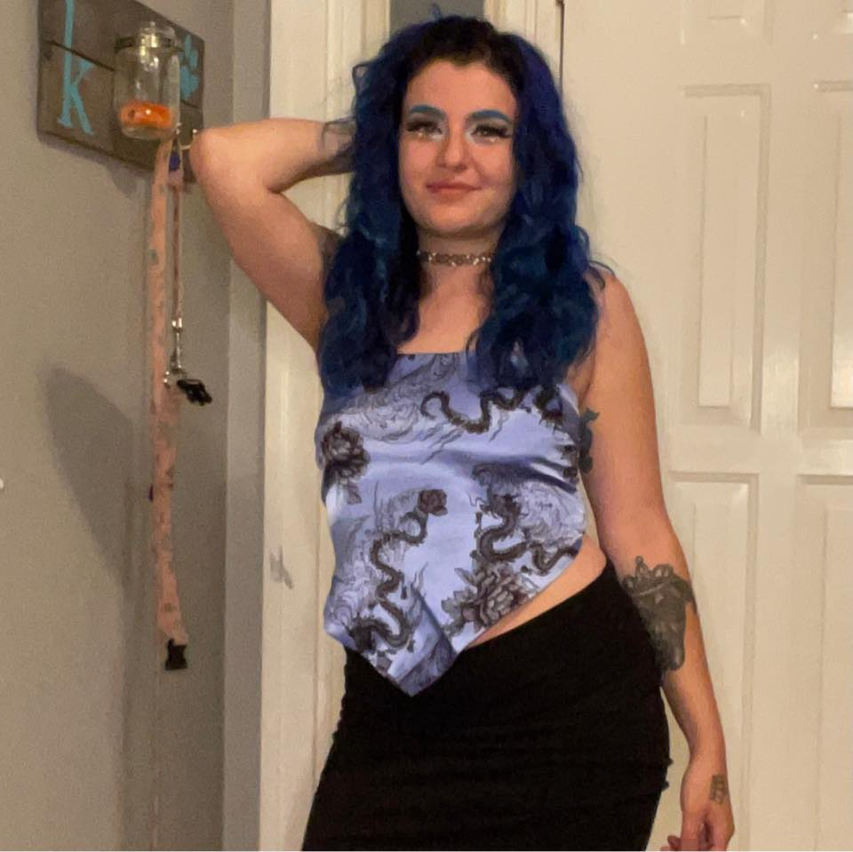
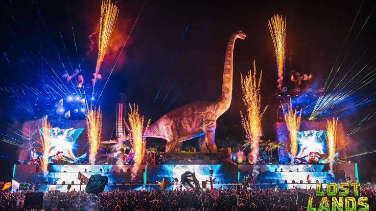
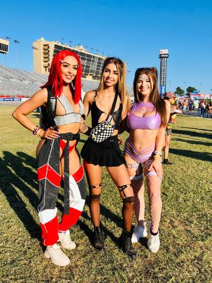
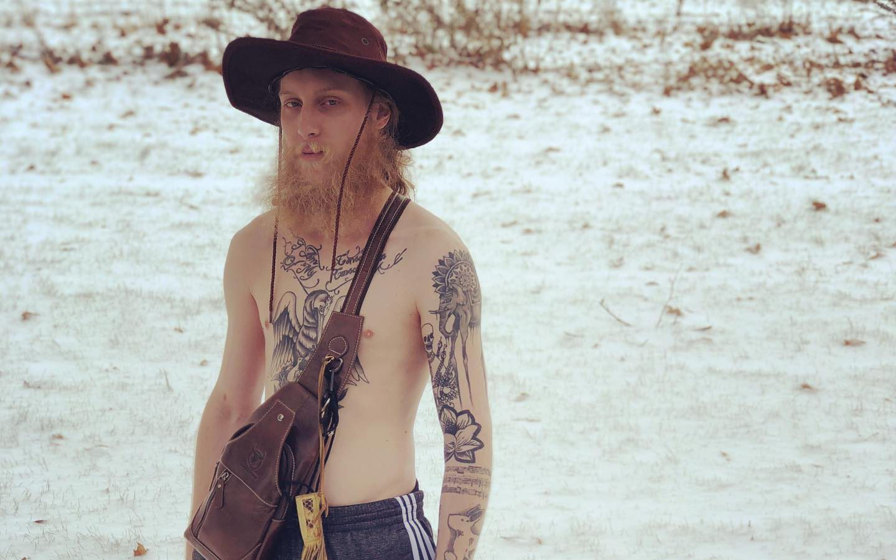

About Me

My name is Layla Sarhan. I am 26 year old professional stylist, barber, and now coding enthusiast. I enjoy listening to a variety music, hanging out with my friends and going to music festivals.
This page has some general information on my life and music festival experiences.
My Music Festivals

My first music festival was Lost Lands 2018. I had never experienced something so beautfiul. Or with so many
amazing people. They had two stages. Both HUGE and filled with dinosaurs. That was the moment my life changed. My second favorite festival was Spring Awakening. Unlike Lost Lands this festival is a day festival. The last festival I went to before the world shut down for a year was Wakaan. This festival was on top of
Mulberry Mountain.
How To Style For Music Festival

Its important to look and feel good when going to a festival. Festivals are an opportunity to explore different creative outfits and accessories.
I personally like to style myself in things that are comfortable and cute. One of my favorite shops is actually run by one of my best friends, Nomadic Clothing on Etsy. A couple of larger shops are FreedomRaveWear and iheartraves.
Festivals I've Been To
- Lost Lands
- Spring Awakening
- SummerCamp
- 515 Alive
- Wakaan
- Beale Street Music Festival
- NorthCoast
Boogie T

Boogie T is my favorite DJ. Originally from New Orleans. Boogie makes electronic dance music, specifically a bass genre called dubstep.
He has a live performance jam band called Boogie T.Rio. and is an unofficial professional Kendama player.